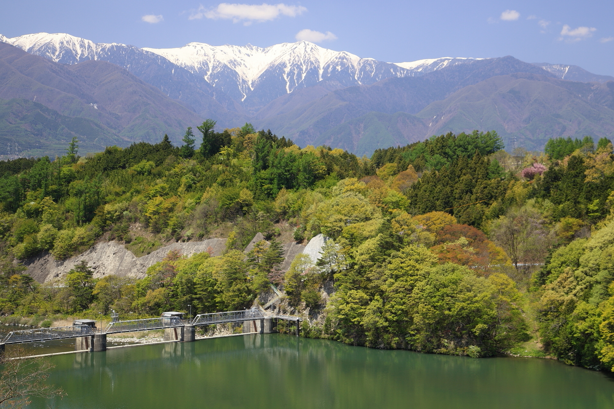

Komagane está no sul da província de Nagano, no vale de Ina. A oeste erguem-se os Alpes Centrais; a leste, os Alpes do Sul. Poucas cidades japonesas apresentam de forma tão clara a geografia dos grandes sistemas montanhosos: dependendo da direção do olhar, o horizonte é fechado por uma cadeia diferente.
Essa posição explica o próprio imaginário local. Komagane é frequentemente apresentada como a cidade “entre dois Alpes”. Ela serve de base para o Senjojiki Cirque e o Kiso-Komagatake, mas possui vida, gastronomia e patrimônio próprios.
Komagane não é Komagatake
Os nomes próximos confundem visitantes. Komagane-shi é a cidade. Kiso-Komagatake é o pico mais alto dos Alpes Centrais. Komagatake Ropeway é o teleférico que leva até Senjojiki. Embora conectados, cada nome descreve uma realidade diferente.
A estação ferroviária e o centro urbano ficam no vale. O terminal de Suganodai organiza o transporte para a montanha. Shirabidaira é a estação inferior do teleférico, já numa área de acesso controlado. Senjojiki está a 2.612 metros, num ambiente completamente diferente.
O vale de Ina como paisagem cultural
O rio Tenryu atravessa o vale de Ina entre cordilheiras altas. Ao longo do tempo, essa geografia orientou agricultura, transporte e formação dos núcleos urbanos. Em Komagane, a paisagem mistura bairros, áreas agrícolas, bosques e vistas abertas para picos nevados.
A cidade oferece uma experiência distinta de destinos alpinos mais internacionalizados. O ritmo é menos concentrado em resorts e mais ligado a uma cidade regional japonesa.
Suganodai e Komagane Kogen
A área de Komagane Kogen, próxima a Suganodai, funciona como transição entre cidade e montanha. Ali se concentram hospedagens, museus, restaurantes, áreas verdes e pontos de transporte. É uma base conveniente para quem pretende embarcar cedo rumo a Shirabidaira.
Kozenji e a lenda de Hayataro
Entre os pontos culturais da cidade está o templo Kozenji, associado à lenda de Hayataro, um cão heroico conhecido em narrativas locais. O espaço acrescenta uma camada histórica e espiritual a um roteiro frequentemente dominado pela paisagem natural.
Sauce katsudon
Komagane é conhecida pelo sauce katsudon, prato no qual uma costeleta suína empanada recebe molho e é servida sobre repolho e arroz. Diferentemente de versões de katsudon preparadas com ovo, aqui o molho e a textura crocante ocupam o centro da experiência.
Um roteiro equilibrado
Uma viagem de dois dias permite ver Komagane com mais profundidade. No primeiro dia, chegada ao vale, visita a Kozenji, caminhada por Komagane Kogen, refeição de sauce katsudon e pernoite. No segundo, saída cedo para Suganodai, ônibus até Shirabidaira, teleférico para Senjojiki e retorno à cidade com margem de segurança.
Quando a montanha fecha por vento ou baixa visibilidade, a cidade continua oferecendo alternativas. Essa flexibilidade é uma vantagem importante de usar Komagane como base.
Como chegar
Komagane possui acesso pela linha JR Iida, por ônibus rodoviários e pelas vias expressas da região central do Japão. O trecho final até o teleférico não é feito livremente em veículo particular. O visitante deve seguir o sistema local de estacionamento e ônibus a partir de Suganodai.
Quando visitar
- Primavera: flores nas áreas baixas e neve ainda visível nas altitudes maiores.
- Verão: vegetação alpina e fuga do calor, com risco de tempestades de montanha.
- Outono: contraste de cores entre vale e altitude; período de grande procura.
- Inverno: paisagem de neve e operação sujeita ao clima.
Uma cidade que dá escala à montanha
Vista de Senjojiki, Komagane parece pequena no fundo do vale. Vista da cidade, a parede dos Alpes Centrais parece quase intransponível. É essa mudança de escala que define o destino.
Fontes recomendadas
- Central Alps Komagatake Ropeway
- Senjojiki Cirque e turismo
- Go Nagano: sul da província
- Japan Travel: Alpes Centrais
Crédito da imagem
Foto: Tomio344456, Wikimedia Commons, CC BY-SA 3.0. Arquivo original no Wikimedia Commons.
Status editorial: matéria importada do Notion e preparada para revisão humana antes da publicação final. Conferir condições sazonais nas fontes oficiais.